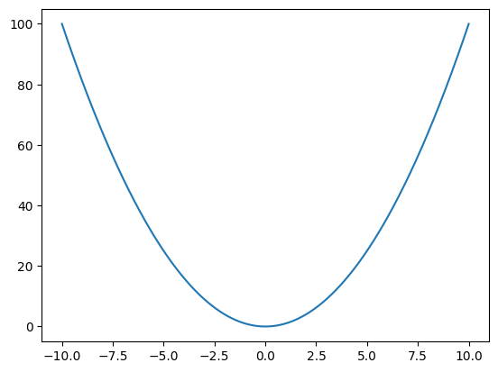

Appendix C — Python tutorial
Contents
Appendix C — Python tutorial#
Python as a fancy calculator#
In this tutorial you’ll learn the basics of the Python programming language. Don’t freak out, this is not a big deal. You’re not going to become a programmer or anything, you’re just learning how to use Python as a fancy calculator.
Calculator analogy: Python commands are similar to the commands you give to a calculator. The same way a calculator has different buttons for the various arithmetic operations, the Python language has a number of commands you can “run” or “execute,” but Python commands are more powerful because you can input multiple lines of Python commands at once.
Just like knowing how to use a calculator is helpful for doing lots of arithmetic operations, learning Python is helpful when for describing multi-step procedures (Python programs).
Why learn python?#
Let’s use the python-as-a-calculator analogy
Python is really good as a “basic” calculator:
expressions
mathematical operations as functions
Python also allows you to encode entire procedures (multi-step commands):
multi-step procedures
for loops used to repeat a given calculations
Python is also very useful as a graphical calculator:
plot functions
visualize data distributions
More importantly, Python is a an extensible calculator:
custom functions
In particular, Python provides lots of extensions (modules) for scientific computations:
linear algebra with
numpymoduleoptimization etc. using
scipySymPy for symbolic math calculations. Very powerful stuff. See examples of solutions to math problems expressed as sympy commands in this paper (see this video for explainer).
All in all, learning Python will give you all kinds of options for doing math and science in general.
Python for statistics#
Once you learn the basics of Python syntax,
you’ll have access to the best-in-class tools for
data management (Pandas, see pandas_tutorial.ipynb),
data visualization (Seaborn, see seaborn_tutorial.ipynb),
statistics (scipy and statsmodels),
and machine learning (scikit-learn, pytorch, huggingface, etc.).
In this tutorial,
we’ll focus on using Python for data calculations and procedures needed for statistics.
Learning a few basic Python constructs like the for loop
will enable you to simulate frequentist probability calculations
and experimentally verify how statistics procedures work.
This is a really big deal!
If’s good to know the statistical formula and recipes,
but it’s even better when you can run your own simulations and check when the formulas work and when they fail.
Don’t worry there won’t be any advanced math—just sums, products, exponents, logs, and square roots.
Nothing fancy, I promise.
If you’ve ever created a formula in a spreadsheet,
then you’re familiar with all the operations we’ll see.
In a spreadsheet formula you’d use SUM( in Python we write sum(.
You see, it’s nothing fancy.
Yes, there will be a lot of code (paragraphs of Python commands) in this tutorial, but you can totally handle this.
If you ever start to freak out an think “OMG this is too complicated!” remember that Python is just a fancy calculator.
Overview of the topics covered:
TODO: make an outline using sentences
After this tutorial, you’ll be ready to read the other two:
Pandas (see pandas_tutorial.ipynb)
Seaborn (see seaborn_tutorial.ipynb)
Getting started#
Installing JupyterLab Desktop#
JupyterLab is a platform for interactive computing that makes it easy to run Python code. You can run JupyterLab on your local computer or on a remote server (mybinder or colab). JupyterLab is based on a notebook interface that allows you to mix text, code, and graphics, which makes it the perfect tool for learning Python.
JupyterLab Desktop is a convenient all-in-one application that includes the Python interpreter, JupyterLab user interface, and most of the Python libraries you’ll need for data analysis. You can download JupyterLab Desktop from the following page on GitHub: https://github.com/jupyterlab/jupyterlab-desktop#jupyterlab-desktop
Choose the download link for your operating system. After the installation completes and you launch the JupyterLab application, you should see a launcher window similar to the one shown below:

Thee JupyterLab interface with the File browser shown in the left sidebar. The box labelled (1) indicates the current working directory, and the box labelled (2) shows the list of files in the current directory. The launcher window allows you to create new notebooks, labelled (3), with other options being Python console, terminal, text files, etc. The left sidebar currently shows the file browser, but it can also be used to show Running Kernels (4) or the Table of Contents (5) of the current notebook.
Use the Python 3 (ipykernel) button under the to launch a new Python 3 notebook.
A notebook consists of a sequence of cells,
similar to how a text document consists of a series of paragraphs.
The new document you created currently has a single empty code cell,
which is ready to accept Python commands.
Type in the expression 2 + 3 (without the quotes) into the cell
then press SHIFT+ENTER to run the code.
You should see the result of the calculation displayed immediately in the output cell,
and the cursor will move to a new input cell.

A notebook with a code cell and its output labelled (1).
The cursor is currently in the cell labelled (2).
The the tab name labelled (3) shows the filename of this notebook is Untitled.ipynb.
The buttons labelled (4) control the notebook execution: run, stop, restart, and run all.
The dropdown (5) changes the current cell between Python code and Markdown text.
There are many notebook features you can learn about over time,
but you don’t need any of these advanced features when getting started.
You just want an easy way to run Python code,
so you can try the experiment with the code blocks you’ll see throughout the rest of the book.
Try some Python commands to get a feeling of how notebooks work. Remember to use SHIFT + ENTER to run the code.
I encourage you to play around with the notebook interface, in particular the buttons labeled (4) and (5). Try clicking on the notebook execution control buttons (4) to see what they do. The play button is equivalent to pressing SHIFT + ENTER. The stop button can be used to interrupt a computation that takes too long. The restart and run-all buttons are useful when you want to re-run all the cells from scratch. The dropdown (5) allows you to change the type of the current cell between code and Markdown text. Markdown is a simple text format that allows you to create headings (section titles, subtitles, etc) and math equations. Mixing Markdown cells and code cells is a great way to organize your statistical analysis notebooks to create a coherent narrative.
TODO: Import screenshots from Sec 1.2
JupyterLab UI: file browser, notebooks, code cells, Markdown cells
Alternative: run JupyterLab instance in the cloud via mybinder
Code cells contain Python commands#
The Python command prompt (each of the code cells in this notebook) allows you to enter Python commands and “run” them by pressing SHIFT + ENTER, or by clicking the play button in the toolbar.
For example,
you can make Python compute the sum of two numbers by entering 2+3 in a code cell,
then pressing SHIFT + ENTER.
2 + 3
5
In the above code cell, the input is the expression 2 + 3 (the sum of two integers),
and the output is printed below.
Let’s now compute a more complicated math expression \((1+4)^2 - 3\), which is equivalent to the following Python expression:
(1+4)**2 - 3
22
The Python syntax for math operations is identical to the notation we use in math:
addition is +, subtraction is -, multiplication is *, division is /.
The syntax for writing exponents is a little unusual, using two asterisks: \(a^n\) = a**n.
When you run a code cell, you’re telling the computer to “evaluate” the Python instructions it contains. Python then prints the result of the expression in the output cell.
Running a code cell is similar to using the EQUALS button on the calculator: whatever math expression you entered, the calculator will compute its value and display it as the output. The process is identical when you execute some Python code, but you’re allowed to input multiple lines of commands at once. The computer will execute the lines of code one by one in the order it sees them.
The result of final calculation in the cell gets automatically printed as the output, right below the input cell. This makes it easy and fun to explore and “poke around” each example given in this notebook.
Your turn! to try this…#
Try typing in some Python code in this cell. If you’ve been simply reading until now, this is your chance to switch to “active” mode.
If you’re reading this online at noBSstats.com, you can use the rocket-button in the top right of the menu at the top, and choose the Live Code option to make all the cells in this notebook interactive, then you can try modifying any of the above Python commands to calculate different expressions.
Expressions and variables#
Python programming involves computing python expressions and manipulating the data stored in variables. It’s time to learn about Python expressions and variables, starting with expressions.
Python expressions#
Let’s start by showing some examples of Python expression.
2+3
5
"Hello " + "world"
'Hello world'
type("hello")
str
"The sum is " + str(2+3)
'The sum is 5'
Here are two examples that involve list expressions (to be discussed later).
[1,2,3]
[1, 2, 3]
len([1,2,3])
3
In a notebook, the last expression in the code cell will be printed automatically.
If you want to print the value of some variable, we normally need to use the print function (to be discussed later), but when working in a notebook interface, we don’t need to do that since
the last statement in each code block gets printed automatically.
Variables#
Similar to variables in math, a variable in Python is a convenient name we use to refer to any value: a constant, the input to a function x, the output of a function y, or any other intermediate value.
We use the assignment operator = to store values into variables.
The assignment operator#
In the above code examples, we computed the values of various expressions, but we didn’t do anything with the result. The more common pattern in Python, is to store the result of an expression into some variable.
To store the result of an expression in a variable,
we use the assignment operator = as follows, from left to right:
we start by writing the name of the variable
then, we add the symbol
=(which stands for assign to)finally, we write an expression for the value we want to store in the variable
For example, here is the code that computes the value of the expression 2+3
and stores the result in the variable x.
x = 2+3
This expression didn’t print
Here are some other ways to describe the above code statement:
Store the result of
2+3into the variablexPut
5intoxSave the value
5into the memory location namedxDefine
xto be equal to5Set
xto5Record the result of
2+3in memory and make the namexpoint to itLet
xbe equal to5
Note the meaning of = is not the same as in math:
we’re not defining an equation but simply setting the contents of x.
To display the contents of the variable x,
we can simply enter its name.
x
5
We can combine the “assign 2+3 to x” and the “display x” commands into a single code cell,
as shown below.
x = 2+3
x
5
Exercise 1: Imitate the above statements, to create another variable y and that contains the value of the expression \((1+4)^2 - 3\), then display the contents of y.
# put you answer in this code cell
#@titlesolution
y = (1+4)**2 - 3
y
22
So to summarize, all the above code examples were based on the pattern:
<place> = <some expression>
which is the type of Python statement you’ll see very often in programming.
Even though this looks like a math equation, the meaning you have to associate with it is much simpler—we are storing the value of the expression <some expression> into the memory location <place>, which is usually a variable name, but later on we’ll learn how to store values inside containers like lists and dicts.
Multi-line expressions (Python code blocks)#
Let’s now look at some longer code examples that show multiple steps of calculations, and intermediate values.
Numerical expressions#
Example: Number of seconds in one week#
Let’s say we need to compute the number of seconds in a week. We ca do this using multi-step Python calculation, using the fact that there are \(60\) seconds in one minute, \(60\) minutes in one hour, and \(24\) hours in one day, and \(7\) days in one week.
secs_in_1min = 60
secs_in_1hour = secs_in_1min * 60
secs_in_1day = secs_in_1hour * 24
secs_in_1week = secs_in_1day * 7
secs_in_1week
604800
Exercise: You’re buying something that costs 57.0 dollars, and the local government imposes a 10% tax. Calculate the total of cost + taxes.
#@titlesolution
cost = 57.00
taxes = 0.10 * cost
total = cost + taxes
total
62.7
Exercise:
The formula for converting a temperature from Celsius to temperature in Fahrenheit
is given by \(F = \tfrac{9}{5} \cdot C + 32\).
Given the variable C which specifies the current temperature in Celsius,
write the expression that calculates the current temperature in Fahrenheit
and store it in the variable F.
C = 20
# F = ... (un-comment and put the correct expression here)
Test: when C = 100, your answer F should be 212.
#@titlesolution
C = 20
F = (C * 9/5) + 32
F
68.0
String expressions#
name = "julie"
message = "Hello " + name # for strings, + means concatenate
message
'Hello julie'
first_name = "Julie"
last_name = "Tremblay"
full_name = first_name + " " + last_name
message = "Hi " + full_name + "!"
message
'Hi Julie Tremblay!'
Types and type conversions#
Variables types#
There are multiple types of variables in Python:
int - integers ex:
34,65,78,-4, etc. (rougly equivalent to \(\mathbb{Z}\))float - ex:
4.6,78.5,1e-3(full name is “floating point number”; similar to \(\mathbb{R}\) but only with finite precision)bool a Boolean truth value with only two choices:
TrueorFalse.string - text content like
"Hello","Hello everyone". Text strings are denoted using either double quotes"Hi"or single quotes'Hi'.list a sequence of values like
[61, 79, 98, 72]. The beginning and the end of the list are denoted by the brackets[and], and its elements are separated by commas.dictionary a collection of key-value pairs. Each key is associated with a value. For example
{ "first_name": "Julie", "last_name": "Tremblay", "score": 98 }
Dictionaries are denoted by curly braces
{and}inside which we place"key": value, pairs separated by commas. Note we can write the dictionary as multi-line expression, which helps with readability. In the dictionary example above, the keys are"first_name","last_name", and"score", and their associated values are"Julie","Tremblay"(stings), and98(an int).tuples, sets, functions, objects, etc. These are other useful Python building blocks which we’ll talk about in later sections.
Let’s look at some examples with variables of different types:
an integer, a floating point number, a boolean value, a string,
a list, and a dictionary.
score = 98
average = 77.5
above_the_average = True
message = "Hello everyone"
scores = [61, 79, 98, 72]
profile = { "first_name":"Julie",
"last_name":"Tremblay",
"score":98 }
Running the above code cell doesn’t print anything,
because we have only defined variables: score, average, above_the_average, message, scores, and profile but not printed any of them.
To display the value of any of these variables,
we can use it’s name on the command line.
Let’s see the contents the score variable:
score
98
The function type tells you the type of any variable, meaning what kind of number or object it is.
type(score)
int
Look back to the list shown above that contains examples of different types of Python objects.
The types are shown in bold.
In this case the value 98 is of type int.
Let’s now look at the value and type of the variable average:
## ALT. display both value and type on the same line (as a tuple)
# score, type(score)
average
77.5
type(average)
float
Exercise: try displaying the contents of the other variables, and their type
#@titlesolution
above_the_average
type(above_the_average)
message
type(message)
scores
type(scores)
profile
type(profile)
dict
Type conversions#
You can convert between each of these types using the function which has the same name as the type of an object
int: transform any expression into an intfloat: transform any expression into a flaotstr: transform an expression to it’s string representaiton (i.e. this is what the functionprintdoes).bool: transform any expression into aTrueorFalselist: transform an any iterable expression into a list
Example 1: converting strings to floats, and floats to strings#
Converting str to float#
f = float("42.5")
f
42.5
type(f)
float
Converting float to str#
s = str(42.5)
s
'42.5'
type(s)
str
Exercise: compute the sum of two strings#
Suppose we’re given two numbers \(m\) and \(n\) and we want to compute their sum \(m+n\). The two numbers are given to use given expressed as strings.
mstr = "2.1"
nstr = "3.4"
print("The variable mstr has value", mstr, "and type", type(mstr))
print("The variable nstr has value", nstr, "and type", type(nstr))
The variable mstr has value 2.1 and type <class 'str'>
The variable nstr has value 3.4 and type <class 'str'>
Let’s try adding the two numbers together to see what happens…
mstr + nstr
'2.13.4'
This is because the addition operator + for strings means concatenate…
Python doesn’t know automatically that the two text strings are mean to be numbers.
We have to manually convert the strings to a Python numerical type (float) first,
then we can do the addition.
Exercise write the Python code that converts the variables mstr and nstr to floating point numbers and add them together.
#@titlesolution
mfloat = float(mstr)
nfloat = float(nstr)
print("The variable mfloat has value", mfloat, "and type", type(mfloat))
print("The variable nfloat has value", nfloat, "and type", type(nfloat))
# compute the sum
mfloat + nfloat
The variable mfloat has value 2.1 and type <class 'float'>
The variable nfloat has value 3.4 and type <class 'float'>
5.5
Getting comfortable with Python#
Python is a “civilized” language, which means it provides lots of help tools to make learning the language easy for beginners. We’ll now learn about some of these tools including, “doc strings” (help menus) and introspection tools for looking at what attributes and methods are available to use.
This combination of tools allows programmers to answer common questions about Python objects and functions without leaving the JupyterLab environment. Basically, in Python all the necessary info is accessible directly in the coding environment. For example, at the end of this section you’ll be able to answer the following questions on your own:
How many and what type of arguments does the function
printexpect?What kind of optional, keyword arguments does the function
printaccept?What attributes and methods does the Python object
objhave?What variables and functions are defined in the current namespace?
More than 50% of any programmer’s time is spent looking at help info and trying to understand the variables, functions, objects, methods, they are working on, so it’s important for you to learn these meta-skills.
Showing the help info#
Every Python object has a “docstring” associated with it, that provides the helpful information about the object.
There are three equivalent ways to view these docstring of any Python object obj (value, variable, function, module, etc.):
help(obj): prints the docstring of the Python objectobjobj?SHIFT + TAB: while cursor on top of Python variable or function
There are also other methods for getting more detailed,
as part of the menu obj??, %psource obj, %pdef obj,
but you won’t need this for now.
Example: learning about the print function#
Let’s say you’re interested to know the options available for the function print,
which we use to print Python expressions.
# put cursor in the middle of function and press SHIFT+TAB
print
<function print>
You know this function accepts a variable and prints it, but what other keywords arguments does it take?
Use the help() function on print
help(print)
Help on built-in function print in module builtins:
print(...)
print(value, ..., sep=' ', end='\n', file=sys.stdout, flush=False)
Prints the values to a stream, or to sys.stdout by default.
Optional keyword arguments:
file: a file-like object (stream); defaults to the current sys.stdout.
sep: string inserted between values, default a space.
end: string appended after the last value, default a newline.
flush: whether to forcibly flush the stream.
Reading the doc string of the print function suggests,
we see ... for the type of inputs accepted,
which means print accepts multiple arguments.
Here is an example that prints a string, an integer, a floating point number, and a list on the same line.
# print?
# print(print.__doc__)
Application: changing the separator when printing multiple values#
We can choose a different separator between arguments of the print function
by specifying the value for the keyword argument sep.
x = 3
y = 2.3
print(x, y)
3 2.3
print(x, y, sep=" --- ")
3 --- 2.3
Exercises#
Exercise 1: print the doc-string of the function len.
#@titlesolution
help(len)
Help on built-in function len in module builtins:
len(obj, /)
Return the number of items in a container.
Exercise 2: print the doc-string of the function sum.
#@titlesolution
help(sum)
Help on built-in function sum in module builtins:
sum(iterable, /, start=0)
Return the sum of a 'start' value (default: 0) plus an iterable of numbers
When the iterable is empty, return the start value.
This function is intended specifically for use with numeric values and may
reject non-numeric types.
Exercise 3:
print the doc strings of other functions we’ve seen so far: int, float, type, etc.
#@titlesolution
# help(int)
# help(float)
# help(type)
(sidenote) Python comments#
You can write comment in Python code using the character #.
Comments can be very useful to provide additional information that explains what the code is trying to do.
# this is a comment
You can also add longer, multi-line comments using triple-quoted text.
"""
This is a longer comment,
which is written on two lines.
"""
'\nThis is a longer comment,\nwhich is written on two lines.\n'
The docstrings we talked about earlier,
are exactly this kind of multi-line strings included in the source code of the functions len, print, etc.
Exercise 4: replace the ... in the code block with comments that
explain the calculation “adding 10% tax to a purchase that costs $57”
that is being computer.
cost = 57.00 # ...
taxes = 0.10 * cost # ...
total = cost + taxes # ...
total # ...
62.7
#@titlesolution
cost = 57.00 # price before taxes
taxes = 0.10 * cost # 10% taxes = 0.1 times price
total = cost + taxes # add price + taxes and store the result in total
total # print the total
62.7
Inspecting Python objects#
Suppose you’re given the Python object obj and you want to know what it is,
and learn what you can do with it.
Displaying the object#
There are several built-in functions that allow you to display information about the any object obj.
type(obj): tells you what type of object it isprint(obj): converts the object tostrand prints itrepr(obj): similar to print, but prints the complete string representation (including quotes).
The output ofrepr(obj)contains all the information needed to reconstruct the objectobj.
We’ve already used both type and print, so there is nothing new here.
I just wanted to remind you you can always use these functions as first line of inspection.
obj = 3
type(x)
int
print(obj)
3
repr(obj)
'3'
Auto-complete object attributes and methods#
JupyterLab notebook environment provides very useful “autocomplete” functionality that helps us look around at the attributes and methods of any object.
TABbutton: typeobj.then press TAB button.dir(obj): shows the “directory” of all the attributes and methods of the objectobj
# message. <TAB>
# message.upper()
# message.lower()
# message.split()
# message.replace("everyone", "world")
(bonus) See what’s in the global namespace#
In a Jupyter notebook,
you can run the command %whos to print all the variables and functions that defined in the current namespace.
# %whos
Python error messages#
Sometimes the executed commands will encounter an error, and Python will give an error message describing the problem encountered. Get psychologically ready for those, because they can be very discouraging. The computer doesn’t like what you entered. Your input is REJECTED!
{kind=link}
Examples of errors include SyntaxError, ValueError, etc.
The error messages look scary,
but really they are there to help you—if you read what the error message tells you,
you will know what needs to be fixed in your input.
The error message literally describes the problem!
Let’s look at an example expression that Python cannot compute, so it raises an exception. The code cell below shows an example error that occurs when you ask Pyhton to computer a math expressions that doesn’t make sense.
3/0
---------------------------------------------------------------------------
ZeroDivisionError Traceback (most recent call last)
Cell In [54], line 1
----> 1 3/0
ZeroDivisionError: division by zero
You’ll see these threatening looking messages on a red background any time Python encounters an error when trying to run the commands you specified.
This is nothing to be alarmed by.
It usually means you made a typo (symbol not defined error),
forgot a syntax element (e.g. (, ,, [, :, etc.),
or tried to compute something impossible like the ZeroDivisionError in the above example.
We get an error since we’re trying to compute an expression that contains a divide by zero error:
Python tell us a ZeroDivisionError: division by zero has occurred.
Indeed it’s not possible to divide by zero.
The way to read these red messages is to focus on the name of the exception and the message that gets printed on the last line. This should tell you what you need to fix. The solution will be obvious for typos and syntax errors, but for more complicated situations requires googling and searching on stack overflow.
3/1
3.0
Below is a list of the most common error messages you are likely to encounter:
SyntaxError: you typed in something wrong (usually missing ” ] or some other punctuation)NameError: Raised when a variable is not found in local or global scope.KeyError: Raised when a key is not found in a dictionary.TypeError: Raised when a function or operation is applied to an object of incorrect type.ValueError: Raised when a function gets an argument of correct type but improper value.ZeroDivisionError: Raised when the second operand of division or modulo operation is zero.later on we’ll also run into:
ImportErrorandAttributeError
There are many more error types. You can see a complete list by typing in the command *Error?.
Exercise: let’s break Python! 🔨🔨🔨🔨🔨🔨
Try typing in Python commands that would causes one of the above errors.
#@titlesolution
# SyntaxError
# {1
# NameError
# zz + 3
# KeyError
# d = {}
# d["zz"]
# TypeError
# sum(3)
# ValueError
# int("zz")
# ZeroDivisionError
# 5/0
# ImportError
# from math import zz
# AttributeError
# "hello".zz
Python documentation#
The official Python documentation website https://docs.python.org provides loads and loads of excellent information for learning Python.
Here are some useful links:
main page https://docs.python.org/3/
example (built in functions and types from Lessons 1 through 3)
print https://docs.python.org/3/library/functions.html#print
float https://docs.python.org/3/library/functions.html#float
str https://docs.python.org/3/library/functions.html#func-str
list https://docs.python.org/3/library/functions.html#func-list
dict https://docs.python.org/3/library/functions.html#func-dict
I encourage you to browse the site to familiarize yourself with the information that is available.
Usually when you do a google search, the official Python docs will show up on the first page of results. Make sure to prefer reading the official documentation instead of other “learn Python” websites (currently the first few google search results that show up point to SEO-optimized, spammy, advertisementfull, websites which are inferior to the official documentation). Always prefer the official docs (even if it appears lower in the list of results on the page). Stack overflow discussions are also a good place to find answers to common Python questions.
Boolean variables and conditional statements#
Let’s talk about boolean variables, which can take on one of two values: True or False.
We obtain boolean values from various comparisons.
x = 3
x > 2
True
Other arithmetic comparisons include >=, <, and <=, == (equal to), != (not equal to).
The in operator can be used to check if an object is part of a list (or another kind of collection).
x = 3
x in [1,2,3,4]
True
Boolean expressions are important to understand because they are used in conditional statements.
Conditional statements#
Conditional control flow between code block alternatives
if True:
print("This code will run")
if False:
print("This code will not run")
This code will run
x = 3
if x > 2:
print("x is greater than 2")
else:
print("x is less than or equal to 2")
x is greater than 2
We can do multiple checks using elif statements.
temp = 25
if temp > 22:
print("It's hot!")
elif temp < 10:
print("It's cold!")
else:
print("It's OK.")
It's hot!
Exercise: add another condition to the above code to print It's very hot if the temperature is above 30.
Boolean expressions#
You can use bool variables and the logical operations and, or, not, etc. to build more complicated boolean expressions (logical conjunctions, disjunctions, and negations).
True and True, True and False, False and True, False and False
(True, False, False, False)
True or True, True or False, False or True, False or False
(True, True, True, False)
x = 3
x >= 0 and x <= 10
True
x < 0 or x > 10
False
Exercise 1
The phase of water (at sea-level pressure = 1 atm = 101.3 kPa = 14.7 psi) ,
depends on its temperature temp.
The three possible phases of water are "gas" (water vapour), "liquid" (water), and "solid" (ice).
The table below shows the phase of water depending on the temperature temp,
expresses as math inequalities.
temp range phase
--------------- -----
temp >= 100 gas
0 <= temp < 100 liquid
temp < 0 solid
Your task is to fill-in the if-elif-else statement in the code cell below,
in order to print the correct phase string,
depending on the value of the variables temp.
# temperature in Celcius (int or float)
temp = 90
# if ...:
# print(....)
# elif ...:
# print(....)
# else:
# print(....)
# uncomment the code if-elif-else statement above and replace:
# ... with conditions (translate math inequaility into Python code),
# .... with the appropriate phase string (one of "gas", "liquid", or "solid")
#@titlesolution
temp = 90
if temp >= 100:
print("gas")
elif temp >= 0:
print("liquid")
else:
print("solid")
liquid
Exercise 2
Teacher Joelle has computed the final scores of the students as a percentage (a score out of 100). The final grade was computed as a weighted combination of the student’s average grade on the assignments, one midterm exam, and a final exam (more on this later).
The school where she teachers, requires her to convert each student’s score to a letter grade, according to the following grading scale:
Grade Numerical score interval
A 85% – 100%
A- 80% – 84.999…%
B+ 75% – 79.999…%
B 70% – 74.999…%
B- 65% – 69.999…%
C+ 60% – 64.999…%
C 55% – 59.999…%
D 50% – 54.999…%
F 0% – 49.999…%
Write the if-elif-elif-…..-else statement that takes the score variable (an int between 0 and 100), and prints the appropriate letter grade for that score.
# student score as a percentage
score = 90
# if ...:
# print(....)
# elif ...:
# print(....)
# .....
# uncomment the code if-elif-.. statement above and replace:
# ... with the appropriate conditions,
# .... with the appropriate letter grades (strings), and
# ..... with additional elif blocks to cover all the cases.
#@titlesolution
score = 73
if score >= 85:
print("A")
elif score >= 80:
print("A-")
elif score >= 75:
print("B+")
elif score >= 70:
print("B")
elif score >= 65:
print("B-")
elif score >= 60:
print("C+")
elif score >= 55:
print("C")
elif score >= 50:
print("D")
else:
print("F")
B
Inline if statements (bonus topic)#
We can also use if-else keywords to compute conditional expressions. The general syntax for these is:
<value1> if <condition> else <value2>
This expressions evaluates to <value1> if <condition> is True,
else it evaluates to <value2> when <condition> is False.
temp = 25
msg = "It's hot!" if temp > 22 else "It's OK."
msg
"It's hot!"
Lists and for loops#
Lists#
To create a list:
start with an opening square bracket
[,then put the elements of the list separated by commas
,finally close the square bracket
]
For example, scores is a list of ints that seen several times before.
scores = [61, 79, 98, 72]
scores
[61, 79, 98, 72]
A list container has a length,
which you can obtain by calling the len function.
len(scores)
4
You check if a list contains a certain element using the in operator:
98 in scores
True
List access syntax#
Elements of a the list are accessed using the square brackets [<index>],
where <index> is the the 0-based index of the element we want to access:
The first element has index
0.The second element has index
1.The last element has index equal to the length of the list minus one.
# first element in the list scores
scores[0]
61
# second element in the list scores
scores[1]
79
# last element in the list scores
scores[3]
72
Alternatively,
we can access the last element in the list using the negative index -1:
scores[-1]
72
List slicing#
We can access a subset of the list using the “slice” syntax a:b,
which corresponds to the range of indices a, a+1, …, b-1.
For example,
if we want to extract the first three elements in the list scores,
we can use the slice 0:3,
which is equivalent to requesting the range of indices 0, 1, and 2.
scores[0:3]
[61, 79, 98]
Note the result of selecting a slice from a list is another list (a list that contains the subset of the original list that consists of elements whose index is included in the slice).
List methods#
List objects can be modified using a their methods. Every list has the following useful methods:
.sort(): sort the list (in increasing order by default).append(): add one element to end of a list.pop(): extract the last element from a list.reverse(): reverse the order of elements in the list
Let’s look at some examples of these methods in action.
To sort the list of scores,
you can call its .sort() method:
scores.sort()
scores
[61, 72, 79, 98]
To add a new element el to the list (at the end),
use the method .append(el):
scores.append(22)
scores
[61, 72, 79, 98, 22]
The method .pop() extracts the last element of the list:
scores.pop()
22
You can think of .pop() as the “undo method” of the append operation.
To reverse the order of elements in the list,
call its .reverse() method:
scores.reverse()
scores
[98, 79, 72, 61]
Other useful list methods: .insert(index,obj), .remove(obj),
and about a dozens more that might be useful once in a while.
Recall you can see a complete list of all the methods on list objects by typing scores. then pressing the TAB button to trigger the auto-complete suggestions.
Uncomment the following code block,
place your cursor after the dot,
and try pressing TAB to see what happens.
# scores.
Exercise: The default behaviour of the method .sort() is to
sort the elements in increasing order.
Suppose you want sort the elements in decreasing order instead.
You can pass a keyword argument to the method .sort()
to request the sorting be done in “revese” order (decreasing instead of increasing).
Consult the docstring of the .sort() method to find the name of the keyword argument
that does this,
then modify the code below to sort the elements of the list scores in decreasing order.
scores.sort()
scores
[61, 72, 79, 98]
#@titlesolution
# help(scores.sort)
scores.sort(reverse=True)
scores
[98, 79, 72, 61]
Converting lists to strings#
The code "".join(msgs) can be used to concatenate the a list of strings msgs.
msgs = ["Hello", "Hi", "Whatsup?"]
"".join(msgs)
'HelloHiWhatsup?'
# join-together using once space " " as separator
" ".join(msgs)
'Hello Hi Whatsup?'
Lists of booleans#
Lists of booleans can be “joined” together
using and or or operations,
but calling all and any list-related built-in functions.
all(conditions):and-together all elements in list of conditionsany(conditions):or-together all elements in list of conditions
# list of three conditions, all being True
alltrue = [True, True, True]
# list of conditions where only one condition is True
onetrue = [True, False, False]
# list of conditions that are all False
allfalse = [False, False, False]
all(alltrue), all(onetrue), all(allfalse)
(True, False, False)
any(alltrue), any(onetrue), any(allfalse)
(True, True, False)
For loops#
We often want to repeat some operation (or several operations) once for each element in a list.
This is what the for-loop is for.
The syntax of a for loop in Python looks like like this:
for el in <container>:
<operations on element `el`>
that allows to repeat a block of operations for each element el in the list <container>.
Example 1: print all the scores#
scores = [61, 79, 98, 72]
for score in scores:
print(score)
61
79
98
72
Example 2: compute the average score#
If \(\mathbf{x}\) is a list of values \([x_0,x_1,x_2,\ldots,x_{n-1}]\), the average of the list is defined as:
In words, the average value of a list of values is the sum of the values divided by the length of the list, which is \(\texttt{len}(\mathbf{x})\) in Python.
# average value of the list `scores`
sum(scores)/len(scores)
77.5
Instead of using the existing, convenient sum Python builtin function,
let’s write a for loop that computes the sum (the total) of the values
in the list scores. We can then compute the average avg by dividing the total by the \(n\), the length of the list.
total = 0
for score in scores:
total = total + score
avg = total / len(scores)
avg
77.5
Sidenote#
The name of the variable used for the for loop is totally up to you, but in general you should choose logical names for elements of the list. Below is an example of a for loop that uses the single-letter variable s as the loop variable:
for s in scores:
print(s)
61
79
98
72
By conventions,
we usually call lists of obj-items objs,
and use the name obj for the for-loop variable.
Examples:
given a list of profiles
profiles, use a the for-loopfor profile in profiles: ...given a list of graph nodes
nodes, use a the for-loop likefor node in nodes: ...etc.
Anyone who is reading this Python code examples will
immediately know that Python objects profiles and nodes are list-like,
since they end in “s” and are used in for loops.
Example: file open and the readlines() method#
TODO: create a file called story.txt in the current working directory,
and write a few lines in it.
The code examples below are based on this sample story.txt (use save as if you want to have the same file).
!pwd
/home/runner/work/noBSstatsnotebooks/noBSstatsnotebooks/tutorials
file = open("story.txt")
lines = file.readlines()
lines
['This is a short story.\n',
'It is very short.\n',
'It has only four lines.\n',
'It ends with the word cat.\n']
for line in lines:
print(line)
This is a short story.
It is very short.
It has only four lines.
It ends with the word cat.
# we can pass a custom `end` keyword argument to avoid double newlines:
for line in lines:
print(line, end="")
This is a short story.
It is very short.
It has only four lines.
It ends with the word cat.
Exercise: write the code that counts the number of words in the string text.
Here are some examples:
The number of words in
"Hello world"is 2.The number of words in
"Whether it is nobler in the mind to suffer the slings and arrows of outrageous fortune, or to take arms against a sea of troubles, and by opposing end them?"is 30.The number of words in
len.__doc__is 8.
Hint: the string method .split() might come in handy.
text = "Hello world"
# write here the code that counts the number of words in `text`
# ...
#@titlesolution
text = "Hello world"
#
# text = len.__doc__
#
# text = """Whether it is nobler in the mind to suffer
# the slings and arrows of outrageous fortune,
# or to take arms against a sea of troubles,
# and by opposing end them?"""
words = text.split()
wordcount = 0
for word in words:
wordcount = wordcount + 1
wordcount
2
List comprehension (bonus topic)#
Very often, we need to write for loops that look like this:
newlist = []
for oldel in oldlist:
newel = <some operation on `oldel`>
newlist.append(newel)
in other words,
we want to apply the <some operation> on all elements of the list.
Python provides a shorthand syntax for writing operation as
newlist = [<some operation on `oldel`> for oldel in oldlist]
This is called the “list comprehension” syntax,
and is used often in Python code.
Note the code using list comprehension takes one line to express the entire transformation
from oldlist to newlist, while the code above requires four lines of code.
Example: compute the squares of the first five integers#
numbers = [1,2,3,4,5]
squares = [n**2 for n in numbers]
squares
[1, 4, 9, 16, 25]
# # ALT. using the `range` function
# numbers = range(1,6)
# squares = [n**2 for n in numbers]
# squares
Example: bag of words representation#
Given the string text, we want to count the number of occurrences of each word in the text.
The words “HELLO”, “Hello”, “Hello,” should all be considered the same as “hello”.
In other words, we want to convert all letters to lowercase and strip punctuation signs.
Given the string "HELLO Hello Hello, hello",
the bag of words representation corresponds to the dictionary
wcounts = {"hello":4}
text = "Hello world"
#
# text = len.__doc__
#
# text = """Whether it is nobler in the mind to suffer
# the slings and arrows of outrageous fortune,
# or to take arms against a sea of troubles,
# and by opposing end them?"""
words = text.split()
clean_words = [word.strip(",.?") for word in words]
words_lower = [word.lower() for word in clean_words]
wcounts = {}
for word in words_lower:
if word not in wcounts:
wcounts[word] = 0
wcounts[word] += 1
wcounts
{'hello': 1, 'world': 1}
Exercise write the Python code that converts a list of string variables prices_str
to floating point numbers and add them together.
pricesstr = ["22.2", "10.1", "33.3"]
# write here the code that computes the total price
#@titlesolution
pricesstr = ["22.2", "10.1", "33.3"]
pricesfloat = [float(price) for price in pricesstr]
sum(pricesfloat)
65.6
Exercise write the Python code that opens the file story.txt, reads the contexts of the file to a string text, then computes their word count.
Hint: reuse the code we saw earlier for opening file
Hint 2: try the .read() method on file object
Hint 3: reuse the code you wrote earlier for doing the word count of the string text
#@titlesolution
file = open("story.txt")
text = file.read()
words = text.split()
wordcount = 0
for word in words:
wordcount = wordcount + 1
wordcount
20
List-like objects = iterables#
The term “iterable” is used in Python to refer to all objects that are list-like, and can be iterated using for loops.
Examples of iterables:
strings
dictionaries (keys, values, or (key,value) items)
sets
range(lazy list of integers)
range(0, 4)
range(0, 4)
list(range(0, 4))
[0, 1, 2, 3]
Iterating over dictionaries#
profile = {"first_name":"Julie", "last_name":"Tremblay", "score":98}
list(profile.keys())
['first_name', 'last_name', 'score']
# ALT.
list(profile)
['first_name', 'last_name', 'score']
list(profile.values())
['Julie', 'Tremblay', 98]
list(profile.items())
[('first_name', 'Julie'), ('last_name', 'Tremblay'), ('score', 98)]
We’ll talk more about dictionaries later on.
Converting iterables to lists#
Under the hood, Python uses all kinds of list-like data structures called iterables”. We don’t need to talk about these or understand how they work—all you need to know is they are behave like lists.
In the code examples above,
we converted several fancy list-like data structures into ordinary lists,
by wrapping them in a call to the function list,
in order to display the results.
Let’s look at why need to use list(iterable) when printing,
instead of just iterable.
For examples,
the set of keys for a dictionary is a dict_keys iterable object:
profile.keys()
dict_keys(['first_name', 'last_name', 'score'])
type(profile.keys())
dict_keys
I know, right? What the hell is dict_keys?
I certainly don’t want to have to explain that…
… so instead, you’ll see this in the code:
list(profile.keys())
['first_name', 'last_name', 'score']
type(list(profile.keys()))
list
Strings are lists of characters#
You can think of the string "abc" a being equivalent to a list of three characters ["a","b","c"],
and use the usual list syntax to access the individual characters in the list.
To illustrate this list-like behaviour of strings, let’s define a string of length 26 that contains all the lowercase Latin letters.
letters = "abcdefghijklmnopqrstuvwxyz"
letters
'abcdefghijklmnopqrstuvwxyz'
len(letters)
26
We can access the individual characters within the using the square brackets.
For example, the index of the letter "a" in the string letters is 0:
letters[0]
'a'
The index of the letter "b" in the string letters is 1:
letters[1]
'b'
The last element in list of 26 letters has index 25
letters[25]
'z'
Alternatively,
we can access the last letter using the negative index -1:
letters[-1]
'z'
We can use slicing to get any substring that spans a particular range of indices. For example, the first four letters of the alphabet are are:
letters[0:4]
'abcd'
The syntax 0:4 is a shorthand for the expression slice(0,4),
which corresponds to the range of indices from 0 (inclusive) to 4 (non-inclusinve): [0,1,2,3].
For loop tricks (optional)#
Tricks:
enumerate: provide an index when iteratingzip: iterate over multiple lists in parallel
Using enumerate to get an indexed for-loop#
Use enumerate(somelist) to iterate over tuples (index, value),
from a list of values from the list somelist.
In each iteration, the index tells you the index of the value
in the current iteration.
list(enumerate(scores))
[(0, 61), (1, 79), (2, 98), (3, 72)]
# example usage
for idx, score in enumerate(scores):
# this for loop has two variables index and score
print("Processing score", score, "which is at index", idx, "in the list")
Processing score 61 which is at index 0 in the list
Processing score 79 which is at index 1 in the list
Processing score 98 which is at index 2 in the list
Processing score 72 which is at index 3 in the list
Using zip#
Use zip(list1,list2) to get an iterator over tuples (value1, value2),
where value1 and value2 are elements taken from list1 and list2,
in parallel, one at a time.
The name “zip” is reference to the way a zipper joins together the teeth of the two sides of the zipper when it is closing.
# example 1
list(zip([1,2,3], ['a','b','c']))
[(1, 'a'), (2, 'b'), (3, 'c')]
# example 2
list1 = [1, 2, 3]
list2 = [4, 5, 6]
list(zip(list1, list2))
[(1, 4), (2, 5), (3, 6)]
# example usage
# compute the sum of the matching values in two lists
for value1, value2 in zip(list1, list2):
print("The sum of", value1, "and", value2, "is", value1+value2)
The sum of 1 and 4 is 5
The sum of 2 and 5 is 7
The sum of 3 and 6 is 9
Functions#
Functions are an important building block in both math and programming.
There is a common convention in math to call function inputs x, and outputs y:
y = f(x) = <expression involving x>
We can also draw as x ---f---> y the function is a map from input values x to an output value y.
The Python equivalent of such a function
def f(x):
<steps to compute y from x>
return y
Functions!! Finally we get to the good stuff! The previous two sessions were important foundations, but now we get to unlocking the first superpower — modelling. Once you know the basic properties of 10 or so functions, you can build precise mathematical models for any real-world system.
Functions are all over the place:
In high school math (the green book) we learn the basic vocabulary of \(y=f(x)\) functions and their parameters, which allows us to describe any real world process
In calculus we analyze functions \(f(x)\) behaviour over time (integral of f = sum of values of \(f(x)\) between x=start and x=finish; and derivative of f at a = the slope of the graph of f(x) when x=a)
In linear algebra we study linear transformations, which are functions that satisfy \(f(ax+by)=af(x)+bf(y)\), meaning a linear combination of inputs produces the same linear combination of outputs.
In probability theory we use functions to describe the probability density of a random variables. For example \(X = \mathcal{N}(\mu, \sigma^2)\) is a random variable whose density is described by the function p(x) = K*exp(-((x-mu)/sigma)^2/2) in stats we talk about functions computed from samples (estimators)
In ML we learn about probabilistic models and use them to predict y from given input x
see also https://www.pythonlikeyoumeanit.com/Module2_EssentialsOfPython/Functions.html
Python functions#
reusable chunks of code that can be def-ined once, and used multiple times by “calling” them with different arguments
Functions in Python are similar to functions in math: a transformation that takes certain inputs and produces certain outputs. The math functions you’re familiar with take numbers as inputs and produce numebrs as outputs, but a Python function can take on any type of input and produce any type of output.
Functions allow us to build chunks of reusable code that we can later reuse in other programs.
We declare a function with the keyword def.
def function_name(<function inputs>):
"""
doc string that describes what the function does (optional)
"""
<function body line 1>
<function body line 2>
<function body line ...>
<function body line n-1>
return <function output value>
We enter the name of the function, then define the functions arguments inside parentheses—the names of the variables that the function receives as inputs. Then the function body is written as an indented block of code (all lines start with four spaces indentation). The output of the function is specified using the return keyword. The return statement is usually the last line in the function body.
Certain functions do not return a value (we call these procedures) and they consist of sequences of commands we want to execute, that don’t have any outputs. FunctIons can also be attached to objects, in which case they are called methods. We’ll talk about these layer on, for now let’s focus on simple math-like functions that receive some input and produce output:
Example 1#
A first example of a simple math-like function. The function is called f,
takes numbers as inputs, and produces numbers as outputs:
def f(x):
return 2*x + 3
f(10)
23
Example 2#
import random
def toss_coin():
r = random.random()
if r < 0.5:
print("heads")
else:
print("tails")
toss_coin() # no return value, but prints output
tails
Example 3#
Write a function water_phase(temp) that takes input temperature temp in Celcius,
uses if/else statements to find what state water is in (assume pressure is 1atm).
The function returns a string, which is one of “Solid”, “Liquid”, “Gas”.
def water_phase(temp):
"""
Returns phase of water at `temp`.
Input temp is temperature in Celcius (int or float)
temp must be greater than -273.15.
"""
if temp > 0 and temp < 100:
return 'Liquid'
elif temp <= 0:
return 'Solid'
elif temp >= 100:
return 'Gas'
## tests to try: correct implementation of `water_phase` should return all True
print( water_phase(20.0) == "Liquid" )
print( water_phase(-20.0) == "Solid" )
print( water_phase(200.0) == "Gas" )
print( water_phase(0.0) in ["Liquid", "Solid"] )
True
True
True
True
## range tests
results = []
for temp in range(1, 100):
result = (water_phase(temp) == 'Liquid')
results.append(result)
# temp <= 0
for temp in range(-100, 1):
result = (water_phase(temp) == 'Solid')
results.append(result)
# temp >= 100
for temp in range(100, 5000):
result = (water_phase(temp) == 'Gas')
results.append(result)
print('Completed a total of', len(results), 'checks...')
all(results) # True if all results are True
Completed a total of 5100 checks...
True
List functions#
Your turn to play with lists now! Complete the code required to implement the functions compute_mean and compute_std below.
Question 1: Mean#
The formula for the mean of a list of numbers \([x_1, x_2, \ldots, x_n]\) is: $\( \text{mean} = \overline{x} = \frac{1}{n}\sum_{i=1}^n x_i = \tfrac{1}{n} \left[ x_1 + x_2 + \cdots + x_n \right]. \)$
Write the function mean(numbers): a function that computes the mean of a list of numbers
def mean(numbers):
"""
Computes the mean of the `numbers` list using a for loop.
"""
total = 0
for number in numbers:
total = total + number
return total / len(numbers)
mean([100,101])
100.5
# TEST CODE (run this code to test you solution)
from test_helpers import test_mean
# RUN TESTS
test_mean(mean)
All tests passed. Good job!
Question 2: Sample standard deviation#
The formula for the sample standard seviation of a list of numbers is: $\( \text{std}(\textbf{x}) = s = \sqrt{ \tfrac{1}{n-1}\sum_{i=1}^n (x_i-\overline{x})^2 } = \sqrt{ \tfrac{1}{n-1}\left[ (x_1-\overline{x})^2 + (x_2-\overline{x})^2 + \cdots + (x_n-\overline{x})^2\right]}. \)$
Note the division is by \((n-1)\) and not \(n\). Strange, no? You’ll have to wait until stats to see why this is the case.
Write compute_std(numbers): computes the sample standard deviation
import math
def std(numbers):
"""
Computes the sample standard deviation (square root of the sample variance)
using a for loop.
"""
avg = mean(numbers)
total = 0
for number in numbers:
total = total + (number-avg)**2
var = total/(len(numbers)-1)
return math.sqrt(var)
numbers = list(range(0,100))
std(numbers)
29.011491975882016
# compare to known good function...
import statistics
statistics.stdev(numbers)
29.011491975882016
# TEST CODE (run this code to test you solution)
from test_helpers import test_std
# RUN TESTS
test_std(std)
All tests passed. Good job!
Exercise 2#
Write a Python function called temp_convert that converts C to F
import math
def temp_convert(temp_C):
"""
Convert the temprate temp_C to temp_F.
"""
pass
Exercise 4#
import random
def roll_die():
value = random.randint(1, 6)
return value
roll_die()
1
Example function head#
We often want to print first few lines from a file to see what data it contains.
Function tricks#
Lambda functions#
Python supports and alternative syntax for defining functions, that is sometimes used to define simple functions. For example, let’s say you need a function that computes the square of the input, which is written as \(f(x) = x^2\) in math notation.
You can use the standard Python syntax …
def f(x):
return x**2
f
… or you can use the lambda expression for defining that function:
lambda x: x**2
The general syntax is lambda <function inputs>: <function output value>.
This lambda-shortcut for defining functions is useful
when calling other functions that expect functions as their arguments.
To illustrate what is going on,
let’s define a python function plot_function(f) that plots
the graph of the function f it receives as its input.
The graph of the function \(f(x)\) is the set of points \((x,f(x))\) in the Cartesian plane, over the interval of \(x\) inputs (we’ll use the \(x\)-limits -10 as the starting point and until x=10 as the end point).
import numpy as np
import matplotlib.pyplot as plt
def plot_function(f, xlims=[-10,10]):
xstart, xend = xlims
xs = np.linspace(xstart, xend, 1000)
ys = [f(x) for x in xs]
plt.plot(xs,ys)
If we want to use the function plot_function to plot the graph of the function \(f(x)=x^2\),
we can define a Python function f using the standard def-syntax and then pass the function f to plot_function to generate the graph,
as shown below:
def f(x):
return x**2
plot_function(f)

Alternatively,
we can use the lambda-shortcut Python syntax to define the function inline,
when calling plot_function.
plot_function(lambda x: x**2)

The lambda-expression lambda x: x**2 is equivalent to the Python function f we defined using the two-line def-statement.
Both ways of defining f are the same type of object:
type(f)
function
type(lambda x: x**2)
function
Since f and lambda x: x**2 are both expressions of the type function,
we can call both of them the same way (by passing in the argument in parentheses).
For example, if we want to evaluate the function \(f(x)\) at the input \(x=3\),
we can call f(3) …
f(3)
9
or we could define the function \(f(x)=x^2\) using an inline lambda expression,
then call the result of the lambda expression by passing in the argument in parentheses.
(lambda x: x**2)(3)
9
The lambda-shortcut for defining functions is not used often,
but sometimes it is very convenient to be able to use inline function definition,
so I want you to be familiar with this syntax.
Applying functions to lists (optional)#
Consider the math function \(f(x)=x^2\). We’ll identify the output of the function as the variable \(y\).
In Python, the function \(f(x)=x^2\) is
def f(x):
return x**2
Suppose we want to compute the output values \(y=f(x)\)
for each \(x\) in the list of values \([1,2,3,4]\),
which we’ll call xs in the code.
xs = [1,2,3,4]
Option A You can use a for loop to compute the function output \(y=f(x)\) for every \(x\) in the list of values. First we create an empty list ys to store the outputs, then we .append to it the values one-by-one as we go though the for loop.
ys = []
for x in xs:
y = f(x)
ys.append(y)
ys
[1, 4, 9, 16]
Option B We can shorten the code using the list comprehension syntax:
ys = [f(x) for x in xs]
ys
[1, 4, 9, 16]
Option C
A third alternative would be to use the function map(f,xs)
which returns a list of the outputs f(x) for all x in the list xs.
ys = map(f, xs)
list(ys)
[1, 4, 9, 16]
# ALT. we can specify the function argument to map as a lambda expression
# list(map(lambda x: x**2, xs))
This notion of obtaining ys from xs for entire lists of values,
instead of individual values like x and y is super useful.
We’ll see this idea come up again later on in this tutorial
when we discuss the Python module NumPy,
which allows you to do math operations with “universal functions”
that do the right thing whether you input a number x,
a list of numbers xs, or even more complicated data structures (e.g. two-dimensional matrices, or higher-dimensional tensors).
Dictionaries#
When programming in Python,
one of the most commonly used data structures,
are dictionaries dict,
and other dict-like data structures.
A dictionary is an associate array between a set of keys and a set of values.
For example,
the code below defines dictionary d that consists of the three keys-value pairs:
d = {"key1":"value1", "key2":"value2", "key3":"value3"}
d
{'key1': 'value1', 'key2': 'value2', 'key3': 'value3'}
d.keys()
dict_keys(['key1', 'key2', 'key3'])
d.values()
dict_values(['value1', 'value2', 'value3'])
You access the value in the dictionary using the square brackets syntax.
For example,
to see the value associated with key key1 in the dictionary d,
we call:
d["key1"]
'value1'
You can change the value associate with any key by assigning a new value to it:
d["key2"] = "newval2"
d
{'key1': 'value1', 'key2': 'newval2', 'key3': 'value3'}
Exercise: creating a new profile dictionary#
Create a dictionary called profile2 with the same structure as profile
profile = {"first_name":"Julie",
"last_name":"Tremblay",
"score":98}
but for the user “Justin Trudeau” with score 31.
profile2 = {}
profile2["first_name"] = "Justin"
profile2["last_name"] = "Trudeau"
profile2["score"] = 31
profile2
{'first_name': 'Justin', 'last_name': 'Trudeau', 'score': 31}
Other data structures#
We already discussed lists and dictionaries,
which are the two most important data structures (containers for data) in Python.
In this section we’ll briefly introduce some other data structures you might encounter.
Sets#
s = set()
s
set()
s.add(3)
s.add(5)
s
{3, 5}
3 in s
True
print("The set s contains the elements:")
for el in s:
print(el)
The set s contains the elements:
3
5
Tuples#
Tuples are similar to lists but with less features.
2,3
(2, 3)
(2,3)
(2, 3)
We can use the tuples syntax to assign to multiple variables on a single line:
x, y = 3, 4
We can also use tuples to “swap” two values.
# Swap the contexts of the variables x and y
tmp = x
y = x
x = tmp
# Equivalent operation on one line
x, y = y, x
Objects and classes#
All the Python variables we’ve been using until now are different kinds of “objects.” An object is a the most general purpose “container” for data, that also provides methods for manipulating this object.
In particular:
attributes: data properties of the object
methods: functions attached to the object
Example 1: string objects#
msg = "Hello"
type(msg)
str
# Uncomment the next line and press TAB after the dot
# msg.
# Attributes
# Methods:
msg.upper()
msg.lower()
msg.__len__()
msg.isascii()
msg.startswith("He")
msg.endswith("lo")
True
Example 2: file objects#
filename = "message.txt"
file = open(filename, "w")
type(file)
_io.TextIOWrapper
# Uncomment the next line and press TAB after the dot
# file.
# Attributes
file.name, file.mode, file.encoding
('message.txt', 'w', 'UTF-8')
# Methods:
file.write("Hello world\n")
file.writelines(["line2", "and line3."])
file.flush()
file.close()
Defining new types of objects#
Using the Python keyword class can be used to define new kinds of objects.
Exercise: create a custom class of objects Interval that represent intervals of real numbers like \([a,b] \subset \mathbb{R}\).
We want to be able to use the new interval objects in if statements to check if a number \(x\) is in the interval \([a,b]\) or not.
Recall the in operator that we can use to check if an element is part of a list
>>> 3 in [1,2,3,4]
True
we want the new objects of type Interval to test for membership.
Example usage:
>>> 3 in Interval(2,4)
True
>>> 5 in Interval(2,4)
False
The expression x in Y is corresponds to calling the method __contains__ on the container object Y:
Y.__contains__(x) and it will return a boolean value (True or False).
If we want to support checks like 3 in Interval(2,4) we therefore have to implement
the method __contains__ on the Interval class.
class Interval:
"""
Object that embodies the mathematical concept of an interval.
`Interval(a,b)` is equivalent to math interval [a,b] = {𝑥 | 𝑎 ≤ 𝑥 ≤ 𝑏}.
"""
def __init__(self, lowerbound, upperbound):
"""
This method is called when the object is created, and is used to
set the object attributes from the arguments passed in.
"""
self.lowerbound = lowerbound
self.upperbound = upperbound
def __str__(self):
"""
Return a representation of the interval as a string like "[a,b]".
"""
return "[" + str(self.lowerbound) + "," + str(self.upperbound) + "]"
def __contains__(self, x):
"""
This method is called to check membership using the `in` keyword.
"""
return self.lowerbound <= x and x <= self.upperbound
def __len__(self):
"""
This method will get called when you call `len` on the object.
"""
return self.upperbound - self.lowerbound
Create an object that corresponds to the interval \([2,4]\).
interval2to4 = Interval(2,4)
interval2to4
<__main__.Interval at 0x7fe750ecf0a0>
type(interval2to4)
__main__.Interval
str(interval2to4)
'[2,4]'
3.3 in interval2to4
True
1 in interval2to4
False
len(interval2to4)
2
Python grammar and syntax review#
Learning Python is like learning a new language:
nouns: values (usually stored in variables)
verbs: functions and methods
adverbs: optional arguments passed to functions
These parts are easy to understand with time, since the new concepts correspond to English words, so you’ll get use to it all very quickly.
Much harder is to learn (more confusing) is the part of syntax of the Python language that involves punctuation, which has very specific meaning, nothing to do with English punctuation. Let’s review this shit.
Punctuation#
The symbols =([{*"'#,.: are used in various Python expressions,
and their meaning sometimes changes depending on the context.
Let’s now make a completer list of the usage for these punctuation marks.
equal sign
=assignment
specify default keyword argument (in function definition)
pass values for keyword arguments (in function call)
Round brackets
()are used for:calling functions
defining tuples:
(1, 2, 3)enforcing operation precedence:
result = (x + y) * zdefining functions (in combination with
defkeyword)defining class
creating object
Curly-brackets (accolades)
{}define dict literals:
mydict = {"k1":"v1", "k2":"v2"}define sets:
{1,2,3}
Square brackets
[]are used for:defining lists:
mylist = [1, 2, 3]list indexing:
ages[3] = 29dict access by key:
mydict["k1"](used by__getitem__or__setitem__)list slice:
mylist[0:2](first two items inmylist)
Quotes
"and'define string literals
note raw string variant
r"..."also exists
Triple quotes
"""and'''long string literals entire paragraphs
Hash symbol
#comment (Python ignores text after the
#symbol)
colon
:syntax for the beginning of indented block. Used after
if,elif,elsefor,while,with, etc.key: value separator in dict literals
slice of indices
0:2(first two items in a list)
period
.decimal separator for floating point literals
access object attributes
access object methods
comma
,element separator in lists, tuples, dicts
separate function arguments
asterisk
*multiplication
(advanced) unpack elements of a list
double asterisk
**exponent
(advanced) unpack elements of a dict
semicolon
;(rarely used)allows to put multiple Python commands on single line
Python keywords#
Here is a list of reserved keywords in Python:
False class finally is return
None continue for lambda try
True def from nonlocal while
and del global not with
as elif if or yield
assert else import pass
break except in raise
Python built-in functions#
Essential functions:
print(arg1, arg2, ...): displaystr(arg1),str(arg2), etc.type(obj): tells you what kind of objectlen(obj): length of the object (only for:str,list,dictobjs)range(a,b): equivalent to the list[a,a+1,...,b-1]help(obj): display info about the object, function, or method
Built-in types:
bool:TrueorFalseint: naturals and integersfloat: rational and real numberscomplex: complex numbers \(z=x+iy\)str: text stringslist: list of objects[obj1, obj2, obj3, ...]dict: associative array between keys and values{key1:value1, key2:value2, key3:value3, ...}.set: list-like object that doesn’t care about orderingNoneType: Denotes the type of theNonevalue, which describes the absence of a value (e.g. the output of a function that doesn’t return any value).
Looking around, learning, and debugging Python code:
str(obj): display the string representation of the object.repr(obj): display the Python representation of the object. Usually, you can copy-paste the output ofrepr(obj)into a Python shell to re-create the object.help(obj): display info about the object, function, or method. This is equivalent to calling object’s docstringobj.__doc__.dir(obj): show complete list of attributes and methods of the objectobjglobals(): display all variables in the Python global namespacelocals(): display local variables (within current scope, e.g. local variables inside inside a function body)
Built-in methods used for lists:
len(obj): length of the object (only for:str,list,dictobjs)sum(li): sum of the values in the list of numbersliall(li): true if all values in the listliare trueany(li): true if any of the values in the listliare trueenumerate(li): convert list of values tolito list of tuples(i,li[i])(use in for loop asfor i, item in enumerate(items):....zip(li1, li2): joint iteration over two listsLow-level iterator methods:
iter()andnext()(out of scope for this tutorial. Just know that every time I said list-like, I meant “any object that implements the iterator and iterable protocols).
Input-output (I/O):
input: prompt user for input, returns the value user entered as a sting.print(arg1, arg2, ...): displaystr(arg1),str(arg2), etc.open(filepath,mode): open the file atfilepathformode-operations. Usemode="r"for reading text from a file, andmode="w"for writing text to a file.
Advanced stuff:
Functional shit:
map(),eval(),exec()Meta-programming:
hasattr(),getattr(),setattr()Object oriented programming:
isinstance(),issubclass(),super()
Bonus topics#
writing standalone scripts (
argparse, example: turnheadinto script)functools.partialfor currying functions (e.g sample-generator callables)???generic functions
*argsand**kwargsReading and writing files https://python-textbok.readthedocs.io/en/1.0/Python_Basics.html#files
Python libraries and modules#
Everything we discussed so far was using the Python built-in functions and data types,
but that is only a small subset of all the functionality available when using Python.
There are hundreds of Python libraries and modules that provide additional functions and data types
for all kinds of applications.
There are Python modules for processing different data files, making web requests, performing computations, etc.
The list is almost endless,
and the vast number of libraries and frameworks is all available to you behind a simple import statement.
The import statement#
We use the import statement to load a python module and make it available in the current context.
The code below shows how to import the module <mod> in the current notebook.
import <mod>
After this statement, we can now use the functions in the module <mod> by calling them using the prefix <mod>.,
which is called the “dot notation” for accessing within the namespace <mod>.
For example, let’s import the statistics module and use the function statistics.mean to compute the mean of three numbers.
import statistics
statistics.mean([1,2,6])
3
A very common trick you’ll see in Python notebooks, is to import python modules under an “alias” name, which is usually a shorter name that is faster to type.
The alias-import statement looks like this:
import <mod> as <alias>
For example, let’s import the statistics module under the alias stats and repeat the mean calculation we saw above.
import statistics as stats
stats.mean([1,2,6])
3
As you can imagine,
if you’re writing some Python code that requires calling a lot of statistics calculations,
you’ll appreciate the alias-import statement,
since you call stats.mean and stats.median instead of having to type the
full module name each time, statistics.mean and statistics.median.
The standard library#
The Python standard library consists of several dozens of Python modules that come bundled with every Python installation.
Here are some modules that come in handy.
mathrandomstatisticsredatetimeurllib.parsejson,csv,os.path,functools
There are also a few libraries that are not part of the standard library, but almost as important:
requestsdownload stuff from the web
Installing Python packages with pip#
TODO
Scientific computing libraries#
NumPy#
Numerical Python (NumPy) is a library that provides high-performance arrays and matrices. NumPy arrays allow mathematical operations to run very fast, which is important when working with medium- and large- datasets.
Example: linspace and other numerical calculations#
SciPy#
Scientific Python (SciPy) is a library that provides most common algorithms and special functions used by scientists and engineers. See https://scipy-lectures.org/
SymPy#
Symbolic math expressions. See sympy_tutorial.pdf.
Matplotlib#
Powerful library for plotting points, lines, and other graphs.
Examples: how to create reusable functions for plotting probability distributions#
plot_pdf_and_cdfcalc_prob_and_plotcalc_prob_and_plot_tails
Data science libraries#
pandaslibrary for tabular data (See pandas_tutorial.ipynb notebook)statsmodelsmodels for linear regression and otherseabornhigh-level library for statistical plots (See seaborn_tutorial.ipynb notebook).plotnineanother high-level library for data visualization base don the grammar of graphics principlesscikit-learntools and algorithms for machine learning
Discussion#
Let’s go over some of the things we skipped in the tutorial, because they were not essential for getting started. Now that you know a little bit about Python, it’s worth mentioning some of these details, since it’s useful context to see how this “Python calculator” business works. I also want to tell you about some of the cool Python applications you can look forward to if you choose to develop your Python skills further.
Running Python code interactively#
Notebooks are an example of “interactive” use of the Python interpreter.
You enter some commands 2+3 in a code cell,
press SHIFT+ENTER to run the code,
and you see the result.
There are several different ways you can access the Python interpreter.
pythonshell. This is what you get in you install Python on your computer. You can open a command prompt (terminal or cmd.exe) and type in the commandpythonto start the interactive Python shell.> python Python 3.6.9 (default, Oct 6 2019, 21:40:49) [GCC 4.2.1 Compatible Apple LLVM 9.1.0 (clang-902.0.39.1)] on darwin Type "help", "copyright", "credits" or "license" for more information. >>> 2+3 5 >>>
ipythonshell. This is a fancier shell with line numbering and many helpful commands.> ipython Python 3.6.9 (default, Oct 6 2019, 21:40:49) Type 'copyright', 'credits' or 'license' for more information IPython 7.13.0 -- An enhanced Interactive Python. Type '?' for help. In [1]: 2+3 Out[1]: 5 In [2]:
Jupyter notebooks are web-based coding environments that allow you to mix code cells and Markdown cells to create “code documents.” Notebook files have an extension
.ipynband can be created using JupyterLab. Several other systems like nbviewer, GitHub, VSCode, Google Colab, can also be used “open” notebooks for viewing and “run” the notebooks interactively.

Colab notebooks. Google operates a service called “Google Colaboratory” (Colab for short) that allows you to run Python code as Colab notebooks.

Note the “Python calculator” functionality works the same way in each case.
The basic Python shell, the fancy ipython shell, and the notebook interface
all offer a place to input your commands,
they READ your command input,
EVALUATE them (i.e. run them),
PRINT the output of the commands execution.
At the end of the READ-EVAL-PRINT steps,
the Python in interpreter goes back into “listening mode”
waiting for your next command input.
The overall behaviour of the Python interpreter is an example of the
READ-EVAL-PRINT Loop (REPL) that appears in professional human-computer interfaces.
The command line prompt (terminal on UNIX or cmd.exe on Windows),
database prompts,
the JavaScript console in your browser,
the Ruby interactive console irb,
and any other interface which accepts commands.
Given this multitude of choices, we’ve opted to use a Jypyter notebook to present this tutorial. Keep in mind you could run all the code examples in python shell, or ipython shell, or as a Colab notebook.
While we’re on the topic of running Python code, let’s briefly mention the other ways Python applications can operate. This is completely out of scope for the remainder of the discussion in this tutorial, since we’re just using Python as a fancy calculator, but I though I’d mention some of the other uses of Python codes.
Applications#
Python is not just a calculator. Python can also be used for non-interactive programs and services. Python is a general-purpose programming language so it enables a lot of applications. The list below talks about some areas where Python programming is currently being used.
command line scripts: you can put commands line scrips are written in Python, then run them on the command line (terminal on UNIX or or
cmd.exeon Windows). For example, you can download any video from YouTube by running the commandyoutube-dl <youtube_url>. If all you want is the audio, you can use some command-line options to specifyyoutube-dl --extract-audio --audio-format mp3 <youtube_url>to extract the audio track from the youtube video and save it as an mp3. The author uses this type of command daily to make local copies of songs to listen to them offline.graphical user interface (GUI) programs: many desktop applications are written in Python. An example of a graphical, point-and-click application written in Python is
Calibre, which is a powerful eBook management library and eBook reader and eBook converter, that supports all imaginable eBook formats.web applications: the Django and Flask frameworks are often used to build web applications. Many of the websites you access every day have as server component written in Python.
machine learning systems: create task-specific functions by using probabilistic models instead of code. Machine learning models undergo a training stage in which the model parameters are “learned” from the training data examples, after which the model can be queried to make predictions.
I mention these examples so you’ll know the other possibilities enabled by Python, beyond the basic “use Python interactively like a calculator” code examples that we saw in this tutorial.
There is a lot of other useful stuff. We’re at the end of this tutorial, but just the beginning of your journey to discover all the interesting thins you can do with Python.
Python programming#
Coding a.k.a. programming, software engineering, or software development is a broad topic, which is out of scope for this short tutorial. If you’re interested to learn more about coding, see the article What is code? by Paul Ford. Think mobile apps, web apps, APIs, algorithms, CPUs, GPUs, TPUs, SysOps, etc. There is a lot to learn about applications enabled by learning basic coding skills, it’s almost like reading and writing skills.
Learning programming usually takes several years, but you don’t need to become a professional coder to start using Python for simple tasks, the same way you don’t need to become a professional author to use writing for everyday tasks. If you reached this far in the tutorial, you know enough about basic Python to continue your journey.
In particular, you can read the other two tutorials that appear in the No Bullshit Guide to Statistics:
Pandas (see pandas_tutorial.ipynb)
Seaborn (see seaborn_tutorial.ipynb)
Learning objectives#
In this tutorial you’ll learn the following specific Python skills, which are required for probability and statistics calculations.
know how to define function (e.g.
fHfor Example 3 in Section 2.1)understand list comprehension (e.g.
[fH(h) for h in range(0,5)]for Example 3 in Section 2.1)know built-in functions:
sumlenrange
know the general pattern for plotting the graph of function
fusingnumpyarrays:xs = np.linspace OR np.arange OR listys = f(xs)(Call
plt.stem(ys)orsns.lineplot(x=xs, y=ys)
(optional) understand when we need to use
vectorize(f)Robyn recommends the following concepts to be covered:
Quotes around text (strings)
Assigning variables
Interpreting error messages
help(method)Syntax for writing and running functions
definitions/explanations for the following (all used in the DATA chapter): ‘None’, ‘0-based indexing’, ‘attributes’, ‘methods’, ‘object’, ‘instance’, ‘class,’ ‘module,’ ‘accessing columns as attributes’
Specific requirements from PROB chapter:
range and summation
Specific requirements from STATS chapter:
Specific requirements from LINEAR MODELS chapter:
Links#
I’ve collected the best learning resources for Python, which you can use to learn more about Python.
Python cheatsheets#
Introductions and tutorials#
Python tutorial by Russell A. Poldrack
https://statsthinking21.github.io/statsthinking21-python/01-IntroductionToPython.htmlProgramming with Python by Software Carpentry team:
https://swcarpentry.github.io/python-novice-inflammation/Official Python tutorial:
https://docs.python.org/3.10/tutorial/Python glossary:
https://docs.python.org/3.10/glossary.html#glossaryNice tutorial:
https://www.pythonlikeyoumeanit.com/Python data structures
https://devopedia.org/python-data-structuresFurther reading
https://github.com/rasbt/python_referencehttps://walkintheforest.com/Content/Introduction+to+Python/🐍+Introduction+to+Python
Online tutorial
https://www.kaggle.com/learn/pythonComplete list of all the Python builtins
https://treyhunner.com/2019/05/python-builtins-worth-learning/
via https://news.ycombinator.com/item?id=30621552
Special topics#
Stats-related python functions
https://www.statology.org/python-guides/https://github.com/mtlpy/mp-84-atelier/blob/main/ressources.md
Python types (
ints,floats, andbools)
https://github.com/anthony-agbay/introduction-to-python/blob/main/modules/basic-python-types-ints-floats-bools/basic-python-types-ints-floats-bools.ipynbPython string operations
https://github.com/anthony-agbay/introduction-to-python/blob/main/modules/basic-python-types-strings/basic-python-types-strings.ipynbScientific computing
https://devopedia.org/python-for-scientific-computing
Books#
Python book for beginners (discussed here)
https://learnpythontherightway.com/Object-Oriented Programming in Python
https://python-textbok.readthedocs.io/en/1.0/index.html
Incoming: